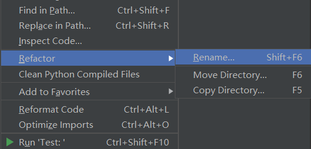
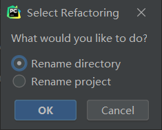
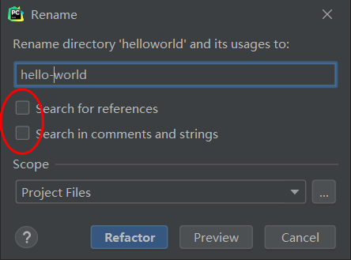
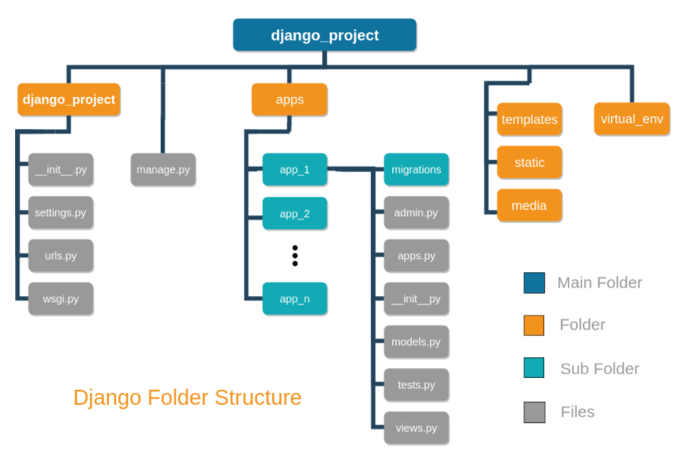

本书作者：测试开发刚哥，文章版权归个人所有，未经授权请勿转载。
Django 官方并没有提供标准的项目结构，于是网上众说纷纭，百花齐放，一千个读者有一千个哈姆雷特。那我们该怎么设计项目结构呢？在回答这个问题之前，先了解一下 Django 原生的目录和文件都是干嘛的。
project
在使用django-admin startproject命令后就会创建这样的目录文件，如下：
mysite/
manage.py
mysite/
__init__.py
settings.py
urls.py
asgi.py
wsgi.py
根目录 mysite/
根目录的 mysite/，仅仅是个目录而已，Django 不会拿它做什么，它的名字可以随意修改。
带短横线的根目录
分享一个踩坑经验，有时候我们想把项目名命名为带短横线的，如 hello-world，通过命令直接创建会报错：
...\> django-admin startproject hello-world
CommandError: 'hello-world' is not a valid project name. Please make sure the name is a valid identifier.
startproject不支持直接创建带短横线的项目名。
方法 1 加参数
其实！它是支持的，只是我们漏了一个参数。startproject的完整格式为django-admin startproject name [directory]，可以在后面追加一个目录参数：
...\> django-admin startproject helloworld hello-world
就可以了。根目录是hello-world，里面的 project 是helloworld。
方法 2 改名字
先用 helloworld 创建，然后再修改，可以①在资源管理器中直接修改文件夹，②也可以在 PyCharm 中修改：

选择 Rename directory：

注意去掉勾选 Search，不修改其他位置：

只修改这个根目录的名字即可。
manage.py
Django 的命令行工具，使用频繁，格式为：
python manage.py <command> [options]
内部 mysite.py/
Django 项目实际使用到的 Python 包，存放项目配置、URL 路由等。
mysite/__init__.py
表明这个目录是 Python 包。
mysite/settings.py
Django 项目配置。
mysite/urls.py
URL 路由。
mysite/asgi.py
兼容 ASGI Web 服务器的入口。
mysite/wsgi.py
兼容 WSGI Web 服务器的入口。
ASGI 和 WSGI，都是一种 Python 的 Web 服务网关接口协议，是在 CGI 通用网关接口，Common Gateway Interface）的标准上构建的。
app
app 是 Django 项目的应用，一个 project 可以包含多个 app。在使用django-admin startapp命令后就会创建这样的目录文件，如下：
polls/
__init__.py
admin.py
apps.py
migrations/
__init__.py
models.py
tests.py
views.py
polls/
app 的 Python 包，可以放在任意路径。修改存放路径，相关配置中的路径也需要修改。
admin.py
存放 Django 自带后台管理的 models。
apps.py
app 配置信息，例如：
from django.apps import AppConfig
class PollsConfig(AppConfig):
name = 'polls'
存放路径不同，name 的值也不同。
migrations/
Django 数据迁移生成的迁移记录文件。
models.py
存放 app 的 models。
tests.py
单元测试。
views.py
视图函数（类）。
urls.py
app 的路由配置，需要手动添加，可通过include()函数导入到mysite/urls.py中，例如：
from django.contrib import admin
from django.urls import include, path
urlpatterns = [
path('admin/', admin.site.urls),
path('polls/', include('polls.urls')),
]
polls/urls.py：
from django.urls import path
from . import views
urlpatterns = [
path('', views.index),
]
访问xxx/polls/就会路由到views.index。
工程化项目参考
虽说是百家争鸣，但也有公认的工程化实践。我找了 GitHub 上 star 最多的叫做 Django Edge 的 project skeleton，它的设计如下：
Top-directory
├── docs
├── logs
├── README.md
├── requirements
│ ├── base.txt
│ ├── development.txt
│ └── production.txt
├── requirements.txt
└── src
├── Your project name
│ ├── __init__.py
│ ├── logger.py
│ ├── settings
│ │ ├── base.py
│ │ ├── development.py
│ │ ├── local.sample.env
│ │ └── production.py
│ ├── urls.py
│ ├── views.py
│ └── wsgi.py
├── accounts
│ ├── admin.py
│ ├── forms.py
│ ├── migrations
│ ├── models.py
│ ├── templates
│ ├── tests.py
│ ├── urls.py
│ └── views.py
├── manage.py
├── media
├── profiles
│ ├── admin.py
│ ├── apps.py
│ ├── forms.py
│ ├── migrations
│ ├── models.py
│ ├── signals.py
│ ├── templates
│ ├── tests.py
│ ├── urls.py
│ └── views.py
├── static
│ ├── bootstrap
│ │ ├── css
│ │ ├── fonts
│ │ └── js
│ └── site
│ ├── css
│ ├── ico
│ ├── img
│ └── js
└── templates
非常的像那么回事。我又搜了其他实践的文章，找到了这张图：

国内的文章也有提到类似这 2 种项目结构的设计，特点是①app 放置在单独目录统一管理，②requirements 和 settings 按环境做拆分，等等等。我说说我的观点，一开始没有必要就按照这种标准的工程化实践来写项目，我更倾向于先凭自己的能力写一版，再不断重构和优化的方式。业务不同，能力不同，经验不同，写出来的代码自然也不同。不过在碰到问题时，可以参考借鉴，很可能别人已经提供了解决方案。
我看了一些 Django 开源项目代码，很少见到真像这么设计项目结构的，所以不必过分在意。
小结
本文介绍了 Django startproject 和 startapp 命令产生的目录文件的结构和作用。然后给出了工程化项目参考。项目结构没有标准，只有适用于当前的最佳实践，可能这就是官方没有给出标准项目结构的原因吧。
参考资料：
https://docs.djangoproject.com/en/3.1/intro/tutorial01/
https://django-edge.readthedocs.io/en/latest/Architecture/
https://studygyaan.com/django/best-practice-to-structure-django-project-directories-and-files